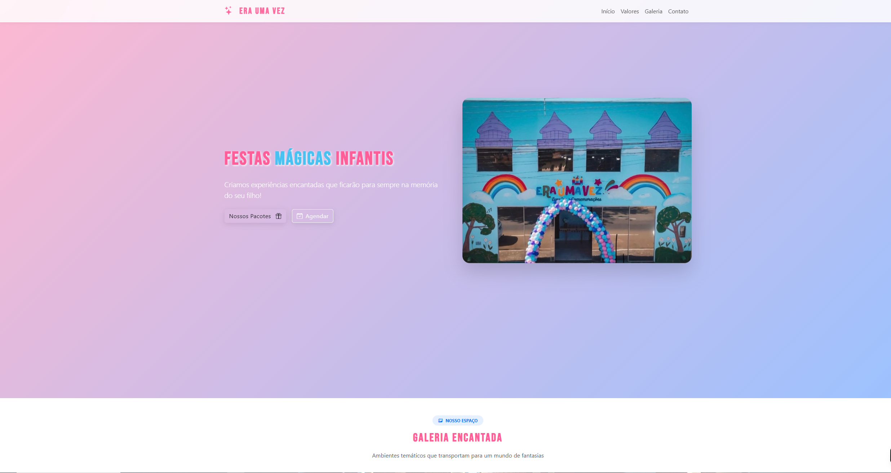

Eventos & Festas
Era Uma Vez | Salão de festas
Um site elegante e acolhedor para um salão de festas que precisava transmitir magia, confiança e praticidade. A navegação simples permite que clientes encontrem fotos, planos e disponibilidade rapidamente.
Ver site ao vivo